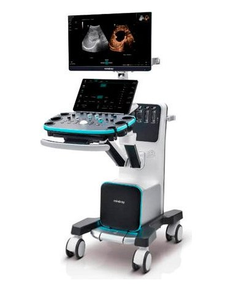

Mindray Resona I9
Alta gama para diagnóstico por imágenes
Radiología · Mama · Tiroides
Características
Ecógrafo premium de la serie Resona, diseñado para servicios de diagnóstico por imágenes de alta demanda.
- Plataforma ZST+ de procesamiento por canal
- Elastografía de onda de corte de alta frecuencia
- Análisis automático de mama y tiroides